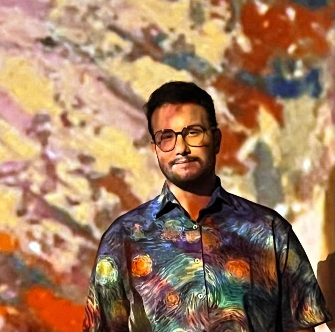

Hello, I'm Lucas Souza
Developer in Progress
I'm a student of Systems Analysis and Development, learning how to use HTML, CSS, Python and JavaScript. Passionate about programming.

I'm a student of Systems Analysis and Development, learning how to use HTML, CSS, Python and JavaScript. Passionate about programming.
I'm currently studying Systems Analysis and Development. I'm in the second semester and progressing with excellent grades. I've already learned about computer networks, foundations of artificial intelligence, system security and auditing, interface design, and software engineering.
Together with my university studies, I'm using the roadmap to improve and acquire knowledge in my field. You can see my progress Here.
Sem projetos ate agora
I was born in the city of Belém, PA in Brazil and grew up in the city of Rio de Janeiro, RJ where I lived for more than 10 years. In 2018, I started living on my own in Rio de Janeiro, where I began studying computer engineering until 2020, and due to the pandemic, I had to pause my college studies. Even being away from college, I never stopped exploring the tech field. I learned a lot about hardware and software during the pandemic, and in 2022, due to financial crises, I had to return to Belém, where I still am today. At the beginning of 2026, I started studying systems analysis and development, where I'm becoming more and more fascinated with programming, and I plan to work in this area.